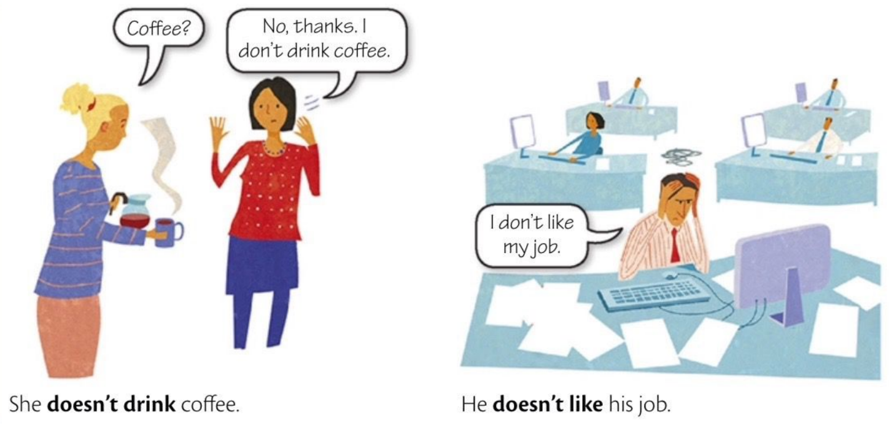
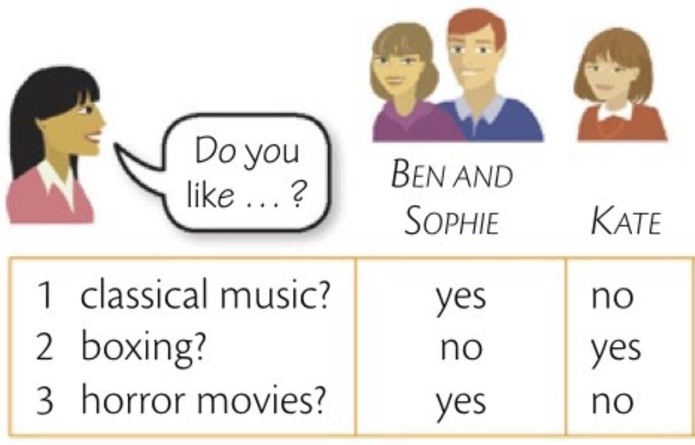

Grammar
Elementary
Unit 6 • I don't... (present simple negative)
A

B
The present negative is:
I
you
he
she
It
we
you
they
don't
don't
doesn't
doesn't
doesn't
don't
don't
don't
work
do
study studies 
like likes
work works
live
sing
teach
Verbs in the third person singular in the negative don't take -s, -es, or -ies, only affirmative.
David doesn't do his job very well.
Paula doesn't usually have breakfast.
Richard doesn't work very hard.
My car doesn't use much gas.
Sarah speaks Spanish, but she doesn't speak Italian.
Sue drinks tea, but she doesn't drink coffee.
The weather is usually nice. It doesn't rain very often.
Sometimes he is late, but it doesn't happen very often.
I don't like Fred and Fred doesn't like me.
I drink coffee, but I don't drink tea.
I don't work very hard.
We don't watch TV very often,
I don't like washing my car. I don't do it very often.
Sam and Chris don't know many people. = They don't know...
EXERCISES
6.1 Write the negative
1. I play the piano very well.
I do not play the piano very well. / I don't play the piano very well.
2. Anna plays the piano very well.
Anna does not play the piano very well. / Anna doesn't play the piano very well.
3. They know my phone number.
They do not know my phone number. / They don't know my phone number.
4. We work very hard.
We do not work very hard. / We don't work very hard.
5. He takes a shower every day.
He does not take a shower every day. / He doesn't take a shower every day.
6. You do the same thing every day.
You do not do the same thing every day. / You don't do the same thing every day.
6.2 Study the information and write sentences with like.

Example
1. Ben and Shophie like classical music.
1.2 Kate .................... classical music.
does not like / doesn't like
2.1 Ben and Shophie .................... boxing.
do not like / don't like
2.2 Kate .................... boxing.
likes
3.1 Ben and Shophie .................... horror movies.
like
3.2 Kate .................... horror movies.
does not like / doesn't like
6.3 Complete the sentences. All of them are negative. Use don't / doesn't + these verbs:
cost
go
know
rain
see
use
wear
1. The weather here is usually nice. It much.
does not rain / doesn't rain
2. Paul has a car, but he it very often.
does not wash / doesn't wash
3. Paul and his friends like films. but they to the movies very often.
do not go / don't go
4. Amanda is married, but she a ring.
does not wear / doesn't wear
5. I much about politics. I'm not interested in it.
do not know / don't know
6. The Plaza hotel isn't very expensive. It much to stay there.
does not cost / doesn't cost
7. Ed lives very near us, but we him very often.
do not see / don't see
6.4 Put the verb into the correct form, positive or negative.
1. Maria four languages - Engish, Frenchm German, and Spanish. (speak)
speaks
2. I my job. It's very boring. entediante (like)
do not like / don't like
3. A: Where's Steve? B: I'm sorry. I . (know)
do not know / don't know
4. Sue is a very quiet person. She very much. (talk)
does not talk / doesn't talk
5. Andy a lot of coke = soda. It's his favorite drink. (drink)
drinks
6. It's not true! it. (believe)
do not believe / don't belive
7. That's a very beautiful picture. I it very much. (love)
love
8. Mark is a vegetarian. He meat. (eat)
does not eat / doesn't eat